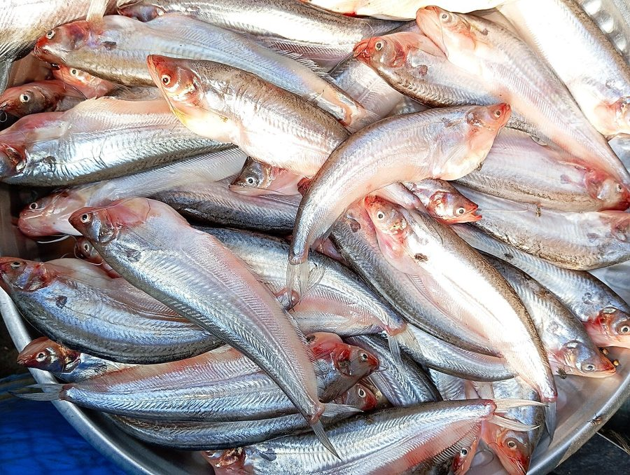

पाबदाPabda
Ompok bimaculatus · Siluridae · FSH-0027

- Scientific nameवैज्ञानिक नाम
- Ompok bimaculatus (Bloch, 1797)
- Familyकुल
- Siluridae
- Hindiहिंदी
- पाबदा
- Local namesस्थानीय नाम
- pabda, pabdah, pabo, pabda machhli, butter catfish
- Status hereयहाँ की स्थिति
- native
- Movementआवागमन
- Resident, here all year
- IUCNIUCN
- LC
- Reviewसमीक्षा
- audited and independently read
When to look कब देखें
Present all year.साल भर मौजूद।
Uses and possibilities उपयोग और संभावनाएँ
Drawn from the documented uses in the profile below, where each is labelled traditional, current or a research lead. All uses →
Tell it apart from इनसे अलग पहचानें
पाबदा / Pabda
Ompok bimaculatus (Bloch, 1797) — Siluridae
पाबदा — छोटी देसी कैटफिश, तालाब और नहर में। कोमल माँस, स्वाद अच्छा। बिस्तर की मिट्टी खोदकर खाना खाती है, तालाब की सफ़ाई करती है।
Quick Identification त्वरित पहचान
| Feature | Description |
|---|---|
| Size | 8–12 cm |
| Body | Elongate, flattened dorsoventrally, scaleless, slimy |
| Head | Flattened; mouth subterminal; 2 small maxillary barbels |
| Spots | Two distinctive dark spots: one on operculum (gill cover), one on caudal peduncle |
| Colour | Dark olive-brown above, lighter below |
| Fins | Dorsal fin small; adipose fin prominent |
Field tip: A small, flattened catfish with a flattened head and two dark body spots. Found in mud and vegetation on the pond bottom. The small size and graceful shape distinguish it from larger catfish.
हिंदी: छोटी, पतली, मिट्टी में छिपी रहती है। दो काले धब्बे।
Morphology आकारिकी
Biometrics (field populations):
| Measurement | Range |
|---|---|
| Standard length | 8–12 cm |
| Weight | 10–20 g |
| Maxillary barbels | 2, small |
| Dorsal fin rays | 5–7 |
| Anal fin rays | 36–42 |
Body structure: Benthic (bottom-dwelling) form: elongate, anteriorly elevated, posteriorly compressed. Skin scaleless and covered with mucus. The body is flattened dorsoventrally, facilitating life in mud and detritus.
Head: Flattened; eyes small; mouth subterminal; two small maxillary barbels. The head shape is adapted for benthic foraging.
Coloration: Two distinctive dark spots: (1) one on the gill cover (operculum), and (2) one on the caudal peduncle (base of tail). These are diagnostic for the species.
Fins: Dorsal fin small; adipose fin present and prominent. Anal fin long with 36–42 rays.
हिंदी: बिस्तर-रहने वाली मछली। सिर चपटा, मुँह नीचे। दो काले निशान — गिल पर और पूँछ के पास।
Behaviour & Ecology व्यवहार और पारिस्थितिकता
A benthic fish feeding on organic matter, algae, detritus and small invertebrates. Lives in mud and vegetation on the pond bottom; nocturnal, hiding in mud during the day. Emerges at night to forage. Tolerates poor water quality and low oxygen; can survive in stagnant, heavily silted ponds. Important for nutrient cycling: by foraging in mud and ingesting detritus, it processes organic matter and releases nutrients back into the water. In ponds where it is abundant, the benthic detritus load is reduced.
Life Cycle / Phenology जीवन चक्र
| Stage / season | Event |
|---|---|
| March–May | Slow growth; maturation progresses |
| June–August | Breeding in muddy substrates or vegetation |
| Eggs | Laid in muddy substrates or vegetation; parental care documented |
| Fry | Small size at hatching; rapid growth in warm water |
| Sexual maturity | 2–3 years |
| Lifespan | 5–7 years recorded |
हिंदी: बरसात में प्रजनन। दो-तीन साल में बालिग़।
Host Plants or Prey आहार
- Benthic detritus and organic ooze
- Algae and diatoms
- Small crustaceans and invertebrate larvae
- Plant debris and fallen leaves
Predators / Natural Enemies शत्रु
- Fish: Large catfish, snakeheads
- Birds: Indian Pond Heron and other herons when in shallow water
- People: Hand-netted or trapped for food
Agricultural / Human Relevance कृषि प्रासंगिकता
Food. A delicate-fleshed food fish, valued in local cuisine. Sold fresh at markets. The meat is soft, white and sweet; often cooked whole or in curries. Included in composite fish culture for its detritivorous role, helping to maintain pond water quality by consuming accumulated detritus. Important for subsistence fishers.
Ecological role in aquaculture: In culture ponds, Ompok feeds on uneaten food, dead organisms and detritus, reducing organic pollution and improving water quality.
Today. Abundant in suitable habitat; easily caught in seasonal ponds and rice fields.
Research direction (a lead, not a result). The role of benthic catfish in nutrient cycling and water quality management in village ponds is not quantified locally.
हिंदी: अच्छी खाई जाने वाली मछली। मीठा माँस। तालाब की सफ़ाई करती है।
Expected Locally स्थानीय रूप से अपेक्षित
Not a field record. Written from published accounts for eastern Uttar Pradesh. No confirmed local sighting yet — if you have seen it, that is what the atlas needs.
अभी तक स्थानीय पुष्टि नहीं। यह विवरण प्रकाशित स्रोतों से है, किसी अवलोकन से नहीं।
To be expected in ponds, swamps and slow-moving water throughout the district. A net catch or photograph is a confirmed record.
Distribution वितरण
Global range: South and Southeast Asia; native to the Gangetic region.
In India: Throughout the Ganga system and associated wetlands of the north-east and east.
In Uttar Pradesh: Common in ponds and rivers of the plains.
In Basti / eastern UP: Expected in ponds, marshes and floodplain water bodies.
Research Questions शोध प्रश्न
Anyone can investigate these | कोई भी इन प्रश्नों की जाँच कर सकता है
- How many pabda can be caught by hand in one night, and what do stomach analyses reveal about diet? — Dissect captured fish.
- Is the nutrient content of ponds with pabda lower than ponds without them? — Compare water chemistry.
- At what age/size do they mature, from scale-reading? — Otolith analysis.
- What is the ratio of pabda to other fish species in composite culture ponds? — Net surveys.
- Are there seasonal movements related to monsoon flooding? — Mark-recapture study.
Similar Species मिलती-जुलती प्रजातियाँ
| Species | How to tell apart | हिंदी |
|---|---|---|
| Stinging Catfish (Heteropneustes fossilis) | Much larger (15–30 cm); one pair of barbels; spined pectoral fin | बड़ी, एक दाढ़ी, काँटा |
| Great Snakehead (Channa marulius) | Much larger; elongate snout; many-rayed dorsal fin | बहुत बड़ी |
| Wall-eyed Pike Catfish | Different spot pattern; larger barbels | अलग धब्बे |
Field rule: A small, flattened catfish with two dark spots (one on gill cover, one on tail base) and a benthic habit is a pabda.
Taxonomy & Classification वर्गीकरण
Original description. Described by Bloch in 1797 in Systema Ichthyologiae Iconibus CX Illustratum. Originally placed in Silurus; transferred to Ompok by later taxonomists.
Subspecies. Monotypic — no subspecies are recognised.
Family and order placement. Siluridae, the catfish family; order Siluriformes.
Phylogenetic notes. Ompok is a genus of small Asian catfish; its relationships within Siluridae are complex but well-supported.
IUCN status rationale. Least Concern. Widespread and abundant in suitable habitat; stable in range.
Photo Gallery फोटो गैलरी
Photos needed आवश्यक फोटो
- [ ] Dorsal view showing flattened body (ऊपर से चपटा)
- [ ] Close-up of diagnostic spots (धब्बे)
- [ ] In mud habitat (मिट्टी में)
- [ ] Market or catch (बाज़ार में)
No photos yet — add field photos to media/species/pabda/ and run node scripts/sync_photos.js.
References संदर्भ
- Bloch, M.E. (1797). Systema Ichthyologiae Iconibus CX Illustratum. Berlin.
- Day, F. (1878). The Fishes of India, vol. 1. Williams and Norgate, London.
- Hora, S.L. & Pillay, T.V.R. (1962). Handbook of fish culture in the Indo-Pacific region. FAO Fisheries Biology Technical Paper no. 14.
- Talwar, P.K. & Jhingran, A.G. (1991). Inland Fishes of India and Adjacent Countries, vol. 1. Balkema, Rotterdam.
- Chakraborty, S.K. & Silas, E.G. (1992). Biology and fishery of the major carp species and associated catfish. In: Fish Culture in Farmland Aquaculture. Springer.
- GBIF Occurrence Data — Ompok bimaculatus, India (2026).
Source file: species/fauna/fish/pabda.md